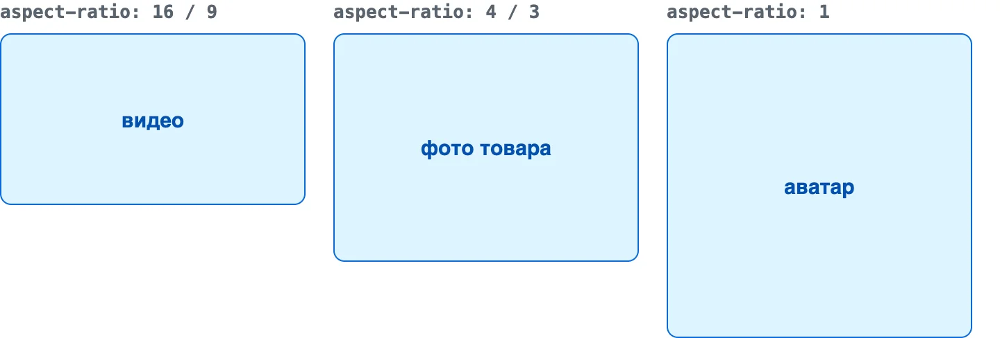
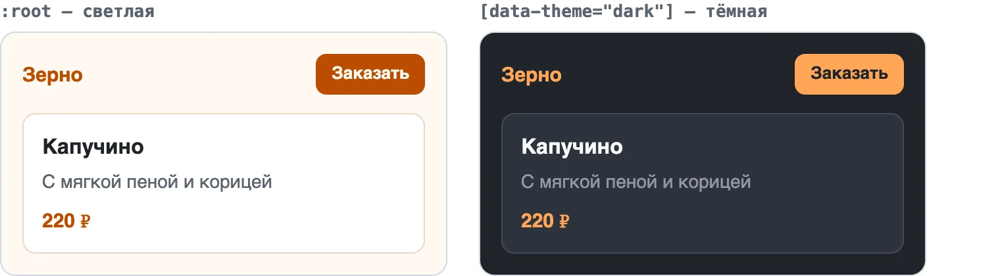

Модуль 1. HTML и CSS. Урок 8
Адаптивная вёрстка
Одна страница для телефона и ноутбука
Фронтенд с нуля
Часть 1
Один сайт — любой экран
Viewport, режим устройств и ширины для проверки
Раньше делали два сайта: site.ru и m.site.ru
Теперь — одна страница, которая перестраивается сама
Один сайт, три ширины

meta viewport
<meta name="viewport" content="width=device-width, initial-scale=1">

Режим устройств

Три ширины для проверки
- 375 телефон
- 768 планшет
- 1280 ноутбук
Часть 2
Медиазапросы
Стили, которые включаются на нужной ширине
Медиазапрос
.cards { grid-template-columns: 1fr; }
@media (min-width: 640px) {
.cards { grid-template-columns: 1fr 1fr; }
}min-width: 640px — «от 640px и шире»
Сначала телефон

Базовые стили — телефон, min-width добавляет колонки
Порядок в файле
/* телефон — без медиазапроса */
.cards { display: grid; gap: 16px; }
@media (min-width: 640px) { … } /* планшет */
@media (min-width: 1024px) { … } /* ноутбук */От меньшей ширины к большей, в конце файла
Диапазон
@media (min-width: 640px) and (max-width: 1023px) {
.promo { font-size: 1.25rem; }
}
/* новая короткая запись */
@media (640px <= width < 1024px) { … }Не только ширина
| Условие | Когда |
|---|---|
orientation: landscape |
телефон повернули боком |
hover: hover |
есть мышь |
prefers-color-scheme: dark |
в системе тёмная тема |
prefers-reduced-motion: reduce |
просят меньше анимации |
Часть 3
Резиновые размеры
Ширины, шрифты и картинки, которые подстраиваются сами
Единицы и функции
| Запись | Что значит |
|---|---|
max-width: 960px |
не шире, но может быть уже |
% |
доля ширины родителя |
vw |
1% ширины окна |
clamp(2rem, 5vw, 3.5rem) |
идеал в границах |
width или max-width
.page { width: 960px; } /* на телефоне — прокрутка */
.page { max-width: 960px; } /* на телефоне — сжимается */Главная замена этого урока
min() и max()
.page { width: min(100% - 32px, 960px); }
.hero { padding: max(16px, 5vw); }min — берёт меньшее, max — большее
Картинки
img {
max-width: 100%;
height: auto;
display: block;
}Одно правило — и ни одна картинка не вылезет
object-fit

Превью и обложки — cover
aspect-ratio

Место под картинку есть ещё до загрузки — страница не прыгает
srcset: браузер выбирает файл
<img src="latte-800.jpg"
srcset="latte-400.jpg 400w, latte-800.jpg 800w, latte-1600.jpg 1600w"
sizes="(min-width: 1024px) 33vw, 100vw"
alt="Латте">Телефон качает лёгкий файл, ноутбук — чёткий
picture: другая картинка
<picture>
<source media="(min-width: 1024px)" srcset="hero-wide.webp">
<img src="hero-tall.webp" alt="Бариста у кофемашины">
</picture>На телефоне — вертикальное фото, на ноутбуке — широкое
Сетка без медиазапросов
.menu {
display: grid;
grid-template-columns: repeat(auto-fill, minmax(260px, 1fr));
}Колонок столько, сколько влезет
Часть 4
Переменные и темы
Один цвет — в одном месте
CSS-переменные
:root {
--color-accent: #bc4c00;
}
.btn {
background: var(--color-accent);
}Поменяли в одном месте — поменялось везде
Запасное значение
.btn { background: var(--color-acent, #bc4c00); }Опечатка в имени — кнопка всё равно оранжевая
Темы

Та же разметка — другие значения переменных
Тема по настройке системы
:root { --bg: #fffaf3; --text: #1f2328; }
@media (prefers-color-scheme: dark) {
:root { --bg: #1f2328; --text: #f6f8fa; }
}
body { background: var(--bg); color: var(--text); }Частые ошибки
- Нет viewport страница мелкая, медиазапросы молчат
- width в px горизонтальная прокрутка
- Только :hover на телефоне мыши нет
- Мелкие кнопки меньше 44px — палец промахнётся
Не запрещайте масштабирование
user-scalable=no отнимает у людей со слабым зрением возможность увеличить текст
Воркшоп: адаптируем свою страницу
- Смотрим страницу на телефоне в DevTools
- Находим, что вылезает за экран
- Сначала телефон: одна колонка
- Медиазапросы и полоски брейкпоинтов
- Резиновые картинки и заголовки
- Проверка на настоящем телефоне
Домашнее задание
- Адаптивный каталог: 1, 2, 3 колонки
- Шапка на телефоне
- Цвета в переменные
- Со звёздочкой: починить страницу